La Antigua Grecia
y su mitologia
Criaturas
(bestias, monstruos y horrores)
El mito de Pandora: Pandora, la primera mujer creada por los dioses, abre una caja (o jarra) que libera todos los males del mundo, dejando solo la esperanza dentro. El mito de Pandora: Pandora, la primera mujer creada por los dioses, abre una caja (o jarra) que libera todos los males del mundo, dejando solo la esperanza dentro. El mito de Pandora: Pandora, la primera mujer creada por los dioses, abre una caja (o jarra) que libera todos los males del mundo, dejando solo la esperanza dentro.

Atalanta y la carrera: Atalanta, una cazadora rápida, acuerda casarse solo con quien pueda vencerla en una carrera; Hipómenes gana con la ayuda de manzanas doradas lanzadas por Afrodita para distraerla.
El juicio de Paris: Paris, príncipe de Troya, elige a Afrodita como la diosa más hermosa en un concurso, lo que desencadena la Guerra de Troya.

Dédalo e Ícaro: Dédalo, un inventor, crea alas de cera para él y su hijo Ícaro, pero Ícaro vuela demasiado cerca del sol, derritiendo las alas y cayendo al mar
Perseo y Medusa: Perseo, con la ayuda de los dioses, mata a Medusa, una gorgona cuyo mirar convierte a las personas en piedra, y usa su cabeza como arma.

Narciso y Eco: Narciso, un joven hermoso, se enamora de su propia imagen reflejada en el agua y muere, mientras Eco, una ninfa que solo puede repetir las palabras de otros, se consume por su amor no correspondido.
Orfeo y Eurídice: Orfeo, un músico talentoso, viaja al inframundo para recuperar a su esposa Eurídice, pero la pierde para siempre al desobedecer la condición de no mirarla hasta salir.

El rapto de Perséfone: Hades, dios del inframundo, secuestra a Perséfone, hija de Deméter, provocando el ciclo de las estaciones cuando ella pasa parte del año en el inframundo y parte con su madre.
El viaje de Odiseo: Odiseo, rey de Ítaca, enfrenta numerosas aventuras y desafíos en su largo viaje de regreso a casa después de la Guerra de Troya, descrito en "La Odisea" de Homero.
Teseo y el Minotauro: Teseo, príncipe de Atenas, entra en el Laberinto de Creta y mata al Minotauro, un monstruo mitad hombre mitad toro.

Hércules y sus 12 trabajos: Hércules, hijo de Zeus, debe completar 12 trabajos imposibles como penitencia, que incluyen matar al León de Nemea y capturar al Jabalí de Erimanto.

Prometeo y el fuego: Prometeo roba el fuego de los dioses para dárselo a la humanidad, lo que le vale un castigo eterno de Zeus.

Zeus y el Monte Olimpo: Zeus, el rey de los dioses, reside en el Monte Olimpo, donde gobierna sobre todos los dioses y humanos.
Los 14 dioses griegos
mas importantes y conocidos
Zeus
El dios padre de los dioses olímpicos, regente del panteón y supervisor del universo, era el dueño del trueno, del relámpago, y por lo tanto de la energía del mundo.
Se lo representaba como un hombre barbudo que esgrimía un cetro y llevaba una corona, o bien con los símbolos del rayo, el águila, el toro y el roble, aunque era común en los relatos mitológicos que adoptara las más diversas formas posibles, sobre todo a la hora de seducir a sus numerosas amantes.
Según los relatos mitológicos, Zeus había sido engendrado por los titanes Rea y Cronos, junto con Poseidón, Hades, Démeter, Hera y Hestia, sus hermanos.
Hades
Dios griego del inframundo, reina sobre los muertos en un reino sombrío y oscuro. Es hermano de Zeus y Poseidón, completando la trinidad de dioses principales. A menudo retratado como un gobernante solitario y sombrío, su dominio es temido y respetado por los mortales y los dioses por igual. Aunque no es malévolo, su papel es crucial en el equilibrio entre la vida y la muerte, y su riqueza en gemas y minerales subterráneos es legendaria.
Se trataba de un reino oscuro y neblinoso, a la que iban todos los mortales al fallecer, y en donde se llevaba a cabo, de acuerdo a ciertas tradiciones religiosas de la Antigua Grecia.
Poseidon
Dios de los mares y de los terremotos, era uno de los dioses coléricos del Olimpo, cuya rabia engendraba tormentas, maremotos, monstruos marinos y naufragios, y a quien oraban los marineros para que les brindara un mar calmo y abundante en islas.
Dado que la cultura griega era una cultura marítima y expansionista, Poseidón era de sus deidades principales, venerado como jefe de la polis en muchas ciudades griegas como Corinto, mientras que en Atenas era el segundo en importancia después de Atenea.
Dioniso
Era el dios del vino y las vides en la mitología de la antigua Grecia. Tenía ciertas características particulares y un complejo sistema mitológico que lo diferenciaba de los demás dioses.
El culto a Dioniso estaba asociado a los estados de delirio y exaltación. Este dios no habitaba un lugar fijo, sino que viajaba permanentemente llevando sus rituales de descontrol por donde pasaba. Siempre iba con un cortejo de sátiros, unos genios de la naturaleza mitad humanos y mitad animales, y ninfas a las que se llamaba ménades.

Afrodita
Fue otra de las diosas más importantes del panteón griego. Pertenecía al Monte Olimpo y era la diosa del amor, la belleza, la pasión y la fertilidad. Se la asociaba con el erotismo y a la vez con el amor sagrado del matrimonio. Era tan hermosa que todos los hombres que la veían se enamoraban de ella.
Existen diferentes versiones sobre el origen de Afrodita. Algunos autores indican que nació de la espuma del mar, cuando el dios Cronos mutiló a su padre, el titán Urano, y lo arrojó al océano.

Atenea
Venerada en Grecia como una diosa guerrera que estaba asociada a numerosas virtudes, y era una de las principales deidades del Monte Olimpo. Su culto era común en toda Grecia y sus áreas de influencia cultural, pero se la consideraba especialmente patrona de Atenas y de la región del Ática.
Por un lado, era adorada como diosa de la guerra (la contraparte femenina del dios Ares). Por otro lado, se la asociaba con la paz y la compasión; así como con las artes y los oficios, la inteligencia y la perspicacia. En Atenas, se la adoraba como diosa de la sabiduría.

Ares
Es el hijo de Zeus y Hera, y personifica la violencia, la brutalidad y la ferocidad en el combate. Se le conoce como el dios de la guerra, pero a diferencia de su hermana Atenea, que representa la estrategia y la sabiduría militar, Ares encarna la furia descontrolada del conflicto. Se le suele representar como un guerrero armado con armadura y un casco, listo para la batalla. Aunque es reverenciado por algunos como un símbolo de valor y fuerza.

Apolo
Se le atribuían numerosos atributos e intereses. Era protector de las artes, la belleza, el equilibrio, la perfección, la profecía y adivinación, la sanación, la iniciación de los jóvenes a la adultez, protector de pastores, marineros y sobre todo arqueros, pues era el dios del tiro con arco y flecha.
Apolo era un dios severo y rencoroso, temido incluso por sus compañeros del Olimpo.
Hermes
Es el mensajero de los dioses, conocido por su astucia, rapidez y habilidad como ladrón. Es hijo de Zeus y la nimfa Maia. Se le representa con alas en los pies y un caduceo en la mano, símbolo del comercio y la elocuencia. Además de su papel como mensajero divino, Hermes es el patrón de los viajeros, los comerciantes y los ladrones, personificando la versatilidad y la habilidad para negociar tanto con los dioses como con los mortales.

Hefesto
Dios griego del fuego y la metalurgia, es cojo y de apariencia tosca. Su fragua divina es el centro del Olimpo, donde forja armas divinas como el escudo de Aquiles. A pesar de ser menospreciado por su aspecto, su genio técnico es incomparable. Su influencia se extiende a la artesanía, la tecnología y la ingeniería, pero su furia puede ser temible, como lo demostró al atrapar a su esposa Afrodita y a Ares en una red.

Hera
Venerada como la reina del Olimpo y esposa de Zeus, el rey de los dioses. Es la diosa del matrimonio, la fertilidad y la familia, y se la representa como una figura majestuosa y poderosa. A menudo se la describe como celosa y vengativa, especialmente hacia las amantes de Zeus y los hijos ilegítimos de su esposo. su papel como protectora del matrimonio y la maternidad se entrelaza con su naturaleza como una deidad temible y respetada.

Artemisa
Una de las deidades más importantes de la mitología griega, conocida como la diosa de la caza, la naturaleza salvaje y la virginidad. Es hermana gemela de Apolo y hija de Zeus y Leto. Artemisa es representada como una figura joven y atlética, con arco y flechas, y a menudo acompañada por una manada de ciervos. Como protectora de la vida silvestre y las doncellas, Artemisa es tanto una figura de poder como de compasión en la mitología griega.

Démeter
Démeter o Demetra era una de las deidades más antiguas de la religión griega. Era la diosa de la agricultura y de los ciclos de la naturaleza, razón por la cual se la veneraba como “portadora de las estaciones”.
Los roles asociados a Démeter eran diversos, casi siempre asociados a la tierra, la fundación, la legislación y la cosecha. Se creía que la humanidad le debía el conocimiento de la siembra y el cultivo, por lo que su culto era especialmente popular en las regiones agrícolas.
Perséfone
Hija de Zeus y Démeter, Perséfone se convirtió en la diosa del inframundo. Allí reinaba sobre los muertos junto con Hades. Luego de que su madre y su esposo llegaran a un acuerdo, Perséfone vivía seis meses en la tierra y seis meses en el inframundo.
Su matrimonio con Hades era uno de los más felices de la mitología griega, y su autoridad en el inframundo era equivalente a la de su esposo. Perséfone era una diosa implacable, apodada en la Odisea como la “reina de hierro”.
Heroes
de la mitologia
Aquiles: Hijo de Peleo y la nereida Tetis, es el héroe más grande de la Guerra de Troya. Famoso por su fuerza y su único punto débil, su talón.
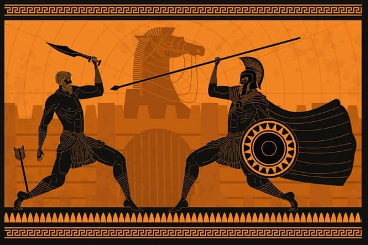
Hércules: Hijo de Zeus y Alcmena, conocido por sus doce trabajos, que incluyen matar al León de Nemea y capturar al Jabalí de Erimanto.

Perseo: Hijo de Zeus y Dánae, famoso por decapitar a la Gorgona Medusa y salvar a Andrómeda del monstruo marino Ceto.
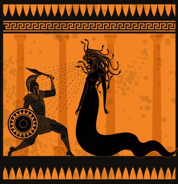
Odiseo (Ulises): Rey de Ítaca, conocido por su astucia y su largo viaje de regreso a casa después de la Guerra de Troya, narrado en la Odisea.
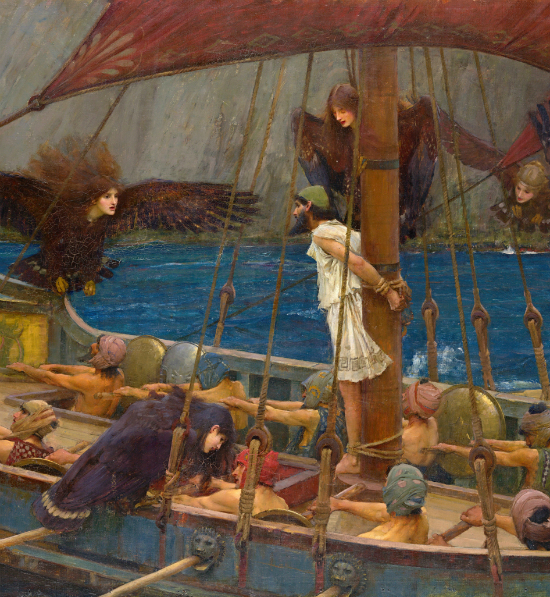
Jasón: Líder de los Argonautas, emprendió la búsqueda del Vellocino de Oro a bordo del barco Argo.

Teseo: Rey de Atenas, conocido por matar al Minotauro en el Laberinto de Creta y por unificar Attica.
Atalanta: Una cazadora virgen y la única mujer argonauta, conocida por su velocidad y por ser una de las cazadoras del Jabalí de Calidón.
br>

Belerofonte: Montó al caballo alado Pegaso y mató a la Quimera, un monstruo con cabeza de león, cuerpo de cabra y cola de serpiente.

Castor y Pólux (Dioscuros): Gemelos, hijos de Leda, conocidos por su habilidad en la batalla y por ser protectores de los marineros.
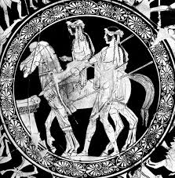
Orfeo: Músico legendario, intentó rescatar a su esposa Eurídice del inframundo con el poder de su música encantadora.
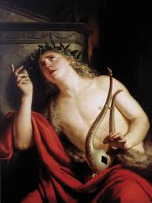
Ajax el Grande: Héroe de la Guerra de Troya, famoso por su tamaño y fuerza, así como por su valentía en la batalla.

Diomedes: Rey de Argos, conocido por su participación en la Guerra de Troya y por herir a los dioses Afrodita y Ares.

Filoctetes: Poseedor del arco de Heracles, su herida y posterior abandono en la isla de Lemnos es un tema central en la obra de Sófocles.

Edipo: Hijo de Layo y Yocasta, reyes de Tebas. Famoso por resolver el enigma de la Esfinge y por su trágica historia, que incluye matar a su padre y casarse con su madre sin saber su verdadera identidad, lo que llevó a su caída y ceguera

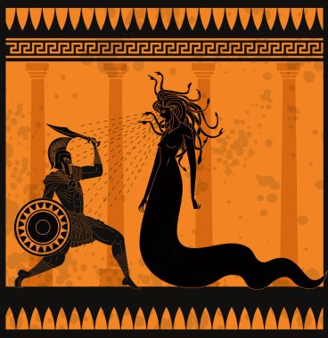
Odiseo (Ulises): Rey de Ítaca, conocido por su astucia y su largo viaje de regreso a casa después de la Guerra de Troya, narrado en la Odisea.
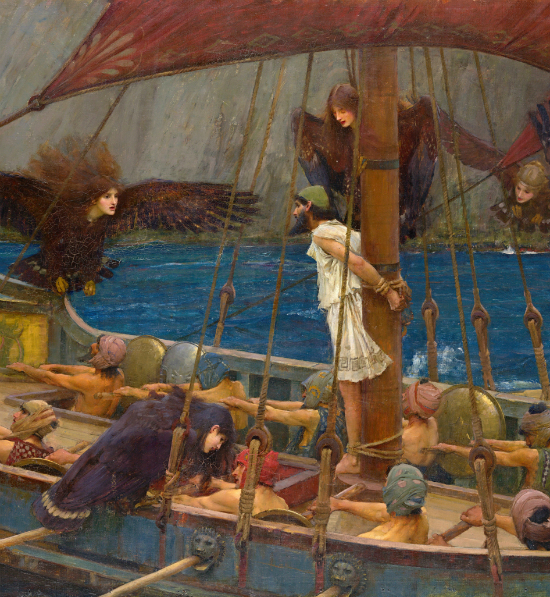
Jasón: Líder de los Argonautas, emprendió la búsqueda del Vellocino de Oro a bordo del barco Argo.
Teseo: Rey de Atenas, conocido por matar al Minotauro en el Laberinto de Creta y por unificar Attica.
Atalanta: Una cazadora virgen y la única mujer argonauta, conocida por su velocidad y por ser una de las cazadoras del Jabalí de Calidón.
br>
Belerofonte: Montó al caballo alado Pegaso y mató a la Quimera, un monstruo con cabeza de león, cuerpo de cabra y cola de serpiente.
Castor y Pólux (Dioscuros): Gemelos, hijos de Leda, conocidos por su habilidad en la batalla y por ser protectores de los marineros.
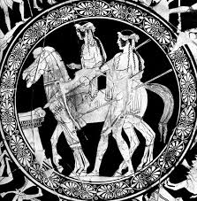
Orfeo: Músico legendario, intentó rescatar a su esposa Eurídice del inframundo con el poder de su música encantadora.
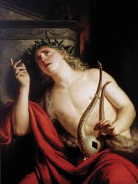
Ajax el Grande: Héroe de la Guerra de Troya, famoso por su tamaño y fuerza, así como por su valentía en la batalla.
Diomedes: Rey de Argos, conocido por su participación en la Guerra de Troya y por herir a los dioses Afrodita y Ares.
Filoctetes: Poseedor del arco de Heracles, su herida y posterior abandono en la isla de Lemnos es un tema central en la obra de Sófocles.
Edipo: Hijo de Layo y Yocasta, reyes de Tebas. Famoso por resolver el enigma de la Esfinge y por su trágica historia, que incluye matar a su padre y casarse con su madre sin saber su verdadera identidad, lo que llevó a su caída y ceguera
Teseo: Rey de Atenas, conocido por matar al Minotauro en el Laberinto de Creta y por unificar Attica.
Atalanta: Una cazadora virgen y la única mujer argonauta, conocida por su velocidad y por ser una de las cazadoras del Jabalí de Calidón.
br>
Belerofonte: Montó al caballo alado Pegaso y mató a la Quimera, un monstruo con cabeza de león, cuerpo de cabra y cola de serpiente.
Castor y Pólux (Dioscuros): Gemelos, hijos de Leda, conocidos por su habilidad en la batalla y por ser protectores de los marineros.
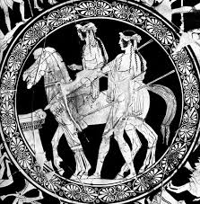
Orfeo: Músico legendario, intentó rescatar a su esposa Eurídice del inframundo con el poder de su música encantadora.
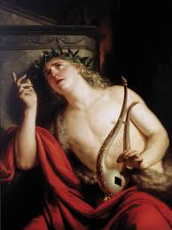
Ajax el Grande: Héroe de la Guerra de Troya, famoso por su tamaño y fuerza, así como por su valentía en la batalla.
Diomedes: Rey de Argos, conocido por su participación en la Guerra de Troya y por herir a los dioses Afrodita y Ares.
Filoctetes: Poseedor del arco de Heracles, su herida y posterior abandono en la isla de Lemnos es un tema central en la obra de Sófocles.
Edipo: Hijo de Layo y Yocasta, reyes de Tebas. Famoso por resolver el enigma de la Esfinge y por su trágica historia, que incluye matar a su padre y casarse con su madre sin saber su verdadera identidad, lo que llevó a su caída y ceguera
Belerofonte: Montó al caballo alado Pegaso y mató a la Quimera, un monstruo con cabeza de león, cuerpo de cabra y cola de serpiente.
Castor y Pólux (Dioscuros): Gemelos, hijos de Leda, conocidos por su habilidad en la batalla y por ser protectores de los marineros.
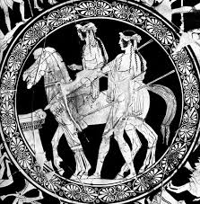
Orfeo: Músico legendario, intentó rescatar a su esposa Eurídice del inframundo con el poder de su música encantadora.
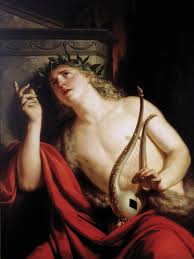
Ajax el Grande: Héroe de la Guerra de Troya, famoso por su tamaño y fuerza, así como por su valentía en la batalla.
Diomedes: Rey de Argos, conocido por su participación en la Guerra de Troya y por herir a los dioses Afrodita y Ares.
Filoctetes: Poseedor del arco de Heracles, su herida y posterior abandono en la isla de Lemnos es un tema central en la obra de Sófocles.
Edipo: Hijo de Layo y Yocasta, reyes de Tebas. Famoso por resolver el enigma de la Esfinge y por su trágica historia, que incluye matar a su padre y casarse con su madre sin saber su verdadera identidad, lo que llevó a su caída y ceguera
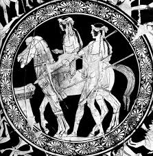
Orfeo: Músico legendario, intentó rescatar a su esposa Eurídice del inframundo con el poder de su música encantadora.
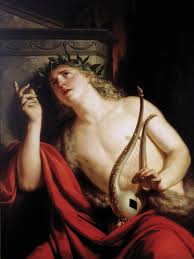
Ajax el Grande: Héroe de la Guerra de Troya, famoso por su tamaño y fuerza, así como por su valentía en la batalla.
Diomedes: Rey de Argos, conocido por su participación en la Guerra de Troya y por herir a los dioses Afrodita y Ares.
Filoctetes: Poseedor del arco de Heracles, su herida y posterior abandono en la isla de Lemnos es un tema central en la obra de Sófocles.
Edipo: Hijo de Layo y Yocasta, reyes de Tebas. Famoso por resolver el enigma de la Esfinge y por su trágica historia, que incluye matar a su padre y casarse con su madre sin saber su verdadera identidad, lo que llevó a su caída y ceguera
Diomedes: Rey de Argos, conocido por su participación en la Guerra de Troya y por herir a los dioses Afrodita y Ares.
Filoctetes: Poseedor del arco de Heracles, su herida y posterior abandono en la isla de Lemnos es un tema central en la obra de Sófocles.
Edipo: Hijo de Layo y Yocasta, reyes de Tebas. Famoso por resolver el enigma de la Esfinge y por su trágica historia, que incluye matar a su padre y casarse con su madre sin saber su verdadera identidad, lo que llevó a su caída y ceguera
Edipo: Hijo de Layo y Yocasta, reyes de Tebas. Famoso por resolver el enigma de la Esfinge y por su trágica historia, que incluye matar a su padre y casarse con su madre sin saber su verdadera identidad, lo que llevó a su caída y ceguera
Criaturas
de la mitologia
Cerbero
El sabueso de Hades, a veces se muestra con dos cabezas y varias partes del cuerpo, pero la forma más familiar es el Cerbero de tres cabezas. Mientras que se dice que Cerbero, uno de los hijos de Echidna, es lo suficientemente feroz como para que los dioses le teman, y come carne, es un perro guardián en la tierra de los ya muertos. Uno de los trabajos de Hércules fue buscar a Cerbero. A diferencia de los monstruos devastadores del campo que Hércules destruyó, Cerbero no estaba dañando a nadie, por lo que Hércules no tenía ninguna razón para matarlo. Cada cabeza tenía un nombre distinto:

Medusa
Medusa, al menos en algunos relatos, fue una vez una mujer hermosa que sin saberlo atrajo la atención del dios del mar Poseidón. Cuando el dios decidió aparearse con ella, estaban en el templo de Atenea. Y ésta estaba furiosa. Como siempre, culpando a la mujer mortal, se vengó convirtiendo a Medusa en un monstruo tan horrible que una sola mirada a su rostro convertiría a un hombre en piedra.
Incluso después de que Perseo, con la ayuda de Atenea, separara a Medusa de su cabeza, ésta mantuvo su poder letal.
La cabeza de Medusa a menudo se describe como cubierta de serpientes en lugar de cabello. Medusa también se cuenta como una de las Gorgonas, tres hijas de Phorcus.

Minotauro
El minotauro era una terrible bestia devoradora de hombres, mitad hombre y mitad toro. Nació de Pasiphae, la esposa del rey Minos de Creta. Para evitar que el minotauro se comiera a su propia gente, Minos hizo encerrar al minotauro en un complejo laberinto diseñado por Dédalo, quien también había construido el artilugio que había permitido que Pasifae fuera preñada por el toro blanco de Poseidón. Para mantener alimentado al minotauro, Minos ordenó a los atenienses que enviaran más de 7 hombres y 7 mujeres jóvenes cada año. Cuando Teseo escuchó los lamentos de las familias el día en que los jóvenes serían enviados como alimento, se ofreció como voluntario para reemplazar a uno de los jóvenes. Luego fue a Creta donde, con la ayuda de una de las hijas del rey, Ariadne, pudo resolver el laberinto y matar al minotauro.
Leon de Nemea
El León de Nemea fue uno de los muchos descendientes de Equidna mitad mujer y mitad serpiente y su esposo, el Tifón de 100 cabezas. Vivía en Argolis aterrorizando a la gente. La piel del león era impenetrable, por lo que cuando Hércules intentó dispararle desde la distancia, no pudo matarlo. No fue hasta que Hércules usó su garrote de madera de olivo para aturdir a la bestia, que pudo estrangularla hasta la muerte. Hércules decidió usar la piel del León de Nemea como protección, pero no pudo desollar al animal hasta que tomó una de las garras del propio León de Nemea para rasgar la piel.
Centauro
El centauro es otro de los animales mitológicos griegos más conocidos, el cual ha sido bien representado a través del tiempo no solo a nivel cultural sino también en películas y diversos cuentos. Esta figura es la unión de un hombre o mujer (centáuride) con un caballo. Así, posee el cuerpo de un caballo y el tronco, brazos y cabeza de una persona. Eran guerreros libres y muy toscos. Hay diversas expresiones sobre su origen. Así, algunos grupos antiguos tenían como símbolo sagrado a los caballos, es por ello que pudieron utilizarlos para la creación de esta criatura. Por otro lado, el mito pudo surgir cuando se vio por primera vez a un hombre cabalgando sobre un caballo, que se pudo pensar que era un animal híbrido. En cualquier caso, si nos centramos en personajes de la mitología griega, Quirón fue un centauro muy famoso.

Quimera
El centauro es otro de los animales mitológicos griegos más conocidos, el cual ha sido bien representado a través del tiempo no solo a nivel cultural sino también en películas y diversos cuentos. Esta figura es la unión de un hombre o mujer (centáuride) con un caballo. Así, posee el cuerpo de un caballo y el tronco, brazos y cabeza de una persona. Eran guerreros libres y muy toscos. Hay diversas expresiones sobre su origen. Así, algunos grupos antiguos tenían como símbolo sagrado a los caballos, es por ello que pudieron utilizarlos para la creación de esta criatura. Por otro lado, el mito pudo surgir cuando se vio por primera vez a un hombre cabalgando sobre un caballo, que se pudo pensar que era un animal híbrido. En cualquier caso, si nos centramos en personajes de la mitología griega, Quirón fue un centauro muy famoso.
Sirenas
Estos seres han estado presenten en multitud de mitologías, historias y leyendas de todo el mundo. Las sirenas de la mitología griega no son como las vemos ahora representadas ni tampoco como las de la mitología nórdica. Estas criaturas vinculadas con el mundo de los muertos se personificaban con cuerpo de ave y cabeza de mujer. Emitían cantos que atraían a los navegantes, ya que vivían en las costas.

Arpia
Estas criaturas con cuerpo de pájaro y rostro de mujer y una apariencia general hermosa, robaban comida a las víctimas y llevaban a los malhechores a las Erinnyes, tres diosas que buscaban venganza contra cualquiera que hubiera hecho un juramento falso o cometido un acto malvado (sus equivalentes romanos eran las Furias o Dirae). Zeus a menudo las usaba como medio de castigo o tortura. Su nombre significa literalmente, "la que arrebata".

Tifon
Tifón nació de Gaia (la tierra) y Tartarus (las profundidades del infierno). Se decía que había sido la criatura más feroz que jamás vagó sobre la tierra. Era enorme. Se decía que cuando estaba de pie, su cabeza rozaba las estrellas. La mitad inferior de su cuerpo consistía en dos colas de víbora enrolladas que silbaban constantemente. Y, en lugar de dedos, varias cabezas de dragón surgían de sus manos. Sus alas extendidas, podían tapar el sol y brotaba fuego de sus ojos. Tifón era una criatura tan poderosa que el único oponente concebible para desafiarlo era el mismo Zeus. La guerra entre Tifón y Zeus fue tan poderosa que amenazó con romper el planeta en dos. Finalmente, Zeus triunfaría sobre este y fue arrojado a los pozos del Tártaro, donde fue sellado para siempre.
Licaon
El primer hombre lobo reconocido, según la leyenda, es Licaón, rey de Arcadia (Grecia). Podría considerarse como el ancestro de los hombres lobo. Era un rey arcadio muy querido por su pueblo pero un fanático religioso que solo pensaba en adorar a los dioses. Su fanatismo llegó a tal punto que acabó convirtiéndose en un rey cruel. No dudó en sacrificar personas inocentes y ofrecerlas a los seres divinos. Esto lo hizo muy impopular e hizo enfurecer también a Zeus. A pesar de las advertencias, no se detuvo con los sacrificios y, como resultado, Zeus lo convirtió en lobo y fue desterrado de las tierras arcadias para siempre.

Ciclope
Los cíclopes eran gigantes primordiales que se decía habían nacido de Gaia, la tierra. Poseían una gran fuerza y ferocidad y contaban con un único ojo abultado que sobresalía de su frente. Temiendo su poder, los cíclopes fueron arrojados a los pozos del Tártaro por su padre Urano. Los monstruos permanecieron encarcelados cuando el titán Cronos derrocó a Urano y tomó su lugar como gobernante del universo. Únicamente cuando los olímpicos llegaron al poder, los cíclopes encontraron la libertad. Zeus liberó a los monstruos, donde la historia más famosa relacionada con un cíclope se topa con Ulises y sus viajes. En el libro 9 de La Odisea, Odiseo y su tripulación se encuentran atrapados en la cueva del poderoso cíclope Polifemo. El monstruo bloquea su escape y devora la carne de sus cautivos día tras día. Odiseo, conocido por su astucia, diseña un plan para escapar.

Aracne
Hija de un pastor y una tejedora talentosa que desafió a Atenea, la diosa de la sabiduría, a un concurso de tejido, existen varias versiones de la historia con diferentes relatos de quién ganó dicha competición, pero ninguna de ellas termina bien para Aracne. En la versión del mito de Ovidio (43 a. C.), Aracne, derrota a Atenea. Sin embargo, su tejido que representa cómo los dioses engañan y abusan de los mortales enfurece a Atenea y, por insultar a los dioses y compararse con ellos, la diosa convierte a la niña en una araña.